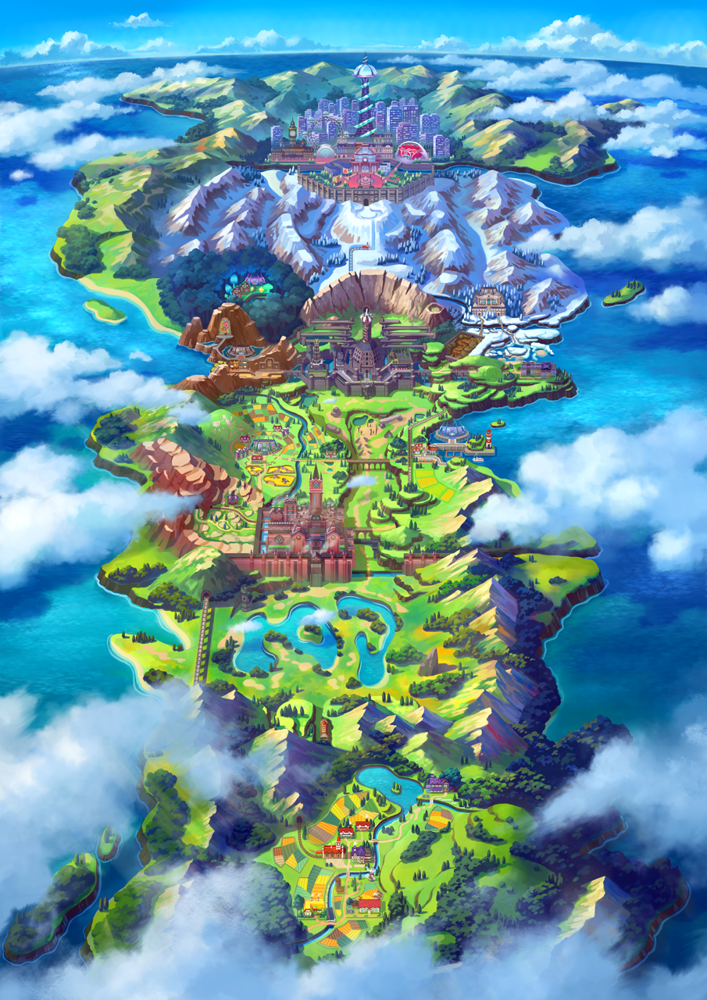

Galar Map
Sobble (Japanese: メッソン Messon) is a Water-type Pokémon introduced in Generation VIII. It evolves into Drizzile starting at level 16, which evolves into Inteleon starting at level 35. Along with Grookey and Scorbunny, Sobble is one of three starter Pokémon of Galar available at the beginning of Pokémon Sword and Shield. Along with Grookey and Scorbunny, it was the first Generation VIII Pokémon to be revealed to the public on February 27, 2019.
Sobble is a small Pokémon that has light-blue skin with darker teal patches and a lighter blue belly and face. It has similar teal eyes with white pupils and sclerae. Sobble also has a yellow fin-like protrusion from the top of its head bordered in dark blue, as well as a curled blue tail tipped in the same dark blue. Sobble has thin limbs, each of them ending in two thin appendages. It can use these to stick to walls and easily climb them. It can run around as both a quadruped and a biped, and use its forelimbs as arms. Sobble has the ability to camouflage itself in water where it hides itself. When it touches the water, Sobble's body changes its patterns and colors. This allows Sobble to blend into its surroundings. Due to being a bit timid, should Sobble get nervous or embarrassed, it will secrete water from its body like sweat in order to disappear into its surroundings. Sobble's tears can make others cry; the effect is so powerful that its tears are said to be as potent as 100 onions. Should it feel threatened, Sobble will start bawling and spreading its tears around the area, causing anyone near it to start crying uncontrollably. It will use this distraction as means to escape. Sobble is scarce in the wild and are typically more common in captivity.